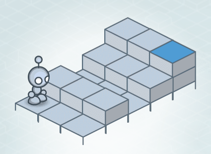

Comupting will most definitly change society. It already has and it will continue to do so. The advancment of the computer and the programs on it have completely changed how our world and society functions. The way in which information is exchanged has gone from handing a piece of paper to someone to send a message to anyone in the world. It has created hundreds of different professions from internet security to monitoring online bank transactions. One can only imagine where technology will take us from here: Anywhere from flying cars to artificial intellegence. The more advanced computing gets, the more the world will adjust to satisfy it.
The lightbot is much closer to a computer than you might think. They both need an input to begin such as a mouse for a computer or an action for lightbot. Both of them react off of that input and respond with an output such as moving or lighting a blue tile. Both also use state machines: recognizing a positon and moving or preforming an action in response to an input. In contrast they differ because the lightbot works on a much simpler and smaller scale than a computer. While lightbot does one state action, the computer is doing many at once
Scratch Game1. This is better because it is much easier to make a mistake than you might think. Checking code in small section ensures that you can find a mistake if you make one.
2. Science experiments are quite similar, you have to
try many times most of the time because it didn't work the first. Coding is different though because in an experiment if it failed it probably meant that an assumtion was incorrect.
4. A two core computer can run 10
programs at seemingly the same time because it can run one line from
one program then switch to the next program faster than our eyes can tell the difference.
1. In larger projects, projecting a message to many sprites can slow down the program significantly.
2. An event is an action that can be triggered and a hadler is the function that deals with the event.
3a. Some details that
are encapsulated by playG() is the noise it makes and how it changes the sprite. 3b. It might be usefull to show how the sprite changes because it can have an affect on the rest of the program.
1.Fixed variables are very advantageous because if you use a variable multiple times in a project you only have to change one value instead of having to worry about changing it everywhere in the code.
2. An example of a most recent variable is something that tracks each lap you run in a mile. Every time you pass the starting position it stores the time.
3a. Two programs I believe used an accumulator is a football game online and
a when playing pong.
3b. In pong the accumulator is used to keep track of the scores between the players.
4. An accumulator compiles all of the values collected while an aggregator leaves the values seperate.
1. A stepper is a value for consecutive integers while a walker is the item the stepper is counting. The best so far vaiable is the highest or lowest value of a list.
2. An example of a best so far variable is a high score
counter for an arcade game.